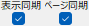
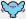
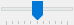
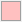
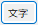
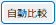
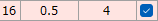
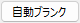

トップページへ戻る
スクリーンショット
「ぱたぱたReaderNope」のスクリーンショット集です。画像をクリックすると拡大表示できます。
ファイル選択比較するPDFをドラッグ＆ドロップ。
からも選択可能。
ならべて表示ファイルを左右にならべて表示。

同期チェックで左右の拡大率やスクロールが同期。（左側を動かすと右側が同期）
重ねて表示[ぱたぱたMODE]にチェックでファイルを重ねて表示。

クリックごとに前面の表示/非表示切替（ぱたぱた）。

スライダーで透過濃度を調整。
差分表示（赤）
で差分を赤く表示。
差分表示（黒）で濃度差で差分表示。
差分表示（色）差分個所を色で表示。
から表示色変更。
差分表示分離差分表示はで切り離し可能。
画像比較画像ファイルも比較可能。
jpg / tif / bmp / pngに加えpsdファイルも読み込み可能。（epsは×）
比較画面キャプチャで比較画面を保存。
保存先はの「saveImage」フォルダ内。
文字比較
で文字比較。
テキストだけ確認したいときに。
自動比較
で自動比較。
複数ページある場合に一気に比較。
赤くなっているページは差分検出。
ページジャンプ
行クリックで該当ページを表示。
自動比較オプション解像度やサイズ補正、比較するページ範囲など設定可能。
自動ページ調整ページ数が異なるPDFを
から自動でブランクを挿入して調整。
※ページの入れ替えには非対応
画像比較レポート画像比較の結果をPDFに出力。
[赤枠囲み]にチェックで差分箇所に囲み。
画像比較レポート設定により多様なパターンでレポート出力が可能。
元PDFに赤枠と注釈追加元のPDFをコピーして赤枠と注釈を追加する形式のレポート。
ぱたぱた差分リスト単一のHTMLファイルとして出力するレポート。
ブラウザがあれば差分をチェックでき、[ぱたぱた]して確認可能。
ぱたぱた差分リスト（重ね合わせ表示）ぱたぱた差分リストは、差分個所をクリックで重ね合わせ表示が可能。
カーソルキーで位置調整、マウスホイールで拡大縮小、ぱたぱたアイコンクリックで[ぱたぱた]。
文字比較レポートテキスト比較のみ行い、元のPDFをコピーして差分に注釈を入れるレポート。
マージンやページサイズが異なっていても比較可能。
文字比較レポート（画像比較併用）画像比較を行い、差分のある部分に絞ってテキスト差分を検出し、元のPDFに注釈を入れるレポート。
無料であることがアイデンティティ
無料開発・無料公開へのこだわり。
だれに指示されることなくのんびりアップデート中。
最強の無料PDF比較ツールを目指して
歴史あるのに知名度なし！
完全無料なのにユーザーいない！
ひっそりこっそり育成中。
※イメージイラストはChatGPT作成
姉妹ツールの元になった機能
姉妹ツール「ばたばたBat」へ継承した機能群です。
QRコード読み取り機能
PDF内にあるQRコードを検出し、読み取り結果をレポートとしてPDF出力。
※「ばたばたBat」のほうが高精度
PDFを画像に変換
PDFをページ単位で画像に変換。
※「ばたばたBat」のほうが解像度が正確
画像をまとめてPDF化
複数の画像ファイルを1つのPDFにまとめて出力。
※「ばたばたBat」ではコンタクトシート化が可能